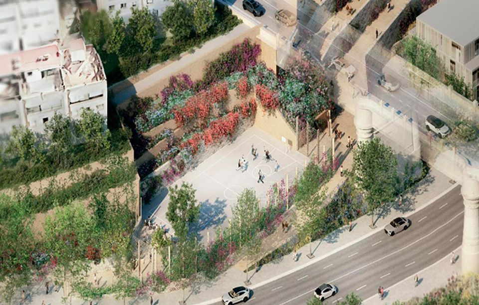
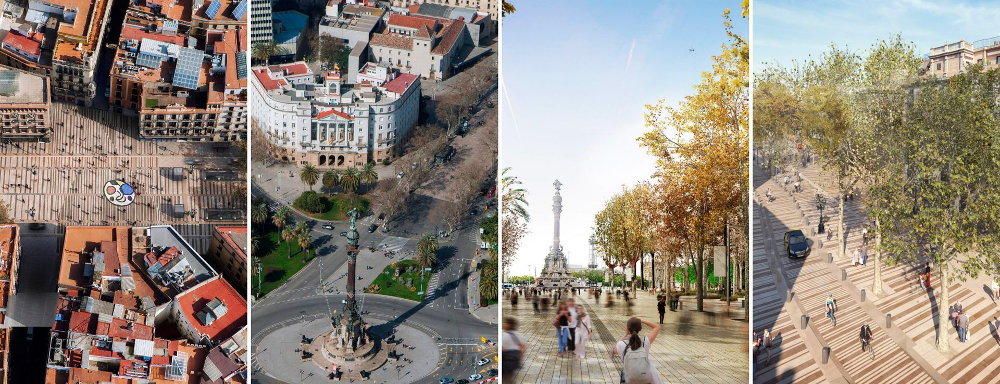
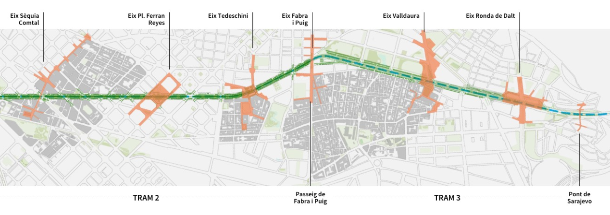
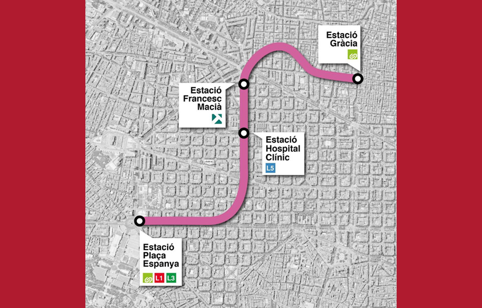

Barcelona tiene en marcha la mayor inversión en urbanismo de la última década. Más de 560 millones de euros se están ejecutando simultáneamente en cuatro grandes intervenciones que cambiarán la fisonomía de barrios enteros: desde la recuperación de Vallcarca hasta la transformación de La Rambla, pasando por la nueva cara de la Meridiana y la llegada del tren al Eixample izquierdo.
Este artículo resume, barrio a barrio, qué se hace, cuándo acaba y qué mejoras concretas verán los vecinos. Y, para quien busca o vende un piso, qué zonas ganarán conectividad, espacio verde y calidad ambiental en los próximos años.
Transformación de Vallcarca
Vallcarca afronta la transformación urbana más ambiciosa del barrio en décadas. El Ayuntamiento desencalla proyectos paralizados durante más de 15 años: una nueva rambla verde, vivienda protegida, un depósito pluvial subterráneo y la urbanización de varias calles en estado de abandono. Nota oficial del Ajuntament →

Rambla verde
2.800 m² de espacio público nuevo en la Avda. de Vallcarca. Expropiación de 4 fincas con dotación de 7,6 M€.
Vivienda protegida
204 pisos HPO públicos (40% del total de 522 viviendas previstas). Dos promociones ya en obras y dos más en marcha.
Depósito pluvial
Nuevo depósito soterrado de 27.000 m³ para evitar inundaciones en el eje Vallcarca–Gran de Gràcia (150 × 20 × 15 m).
Parque Central
Primera fase este verano: 2 pistas de street basket en 2.000 m². Presupuesto: 1,94 M€. El parque incluirá huertos urbanos y zonas de estancia.
Urbanización de calles
8.000 m² de aceras más anchas, plataforma única, zonas verdes y recogida neumática de residuos. 70 árboles nuevos. Inversión: 6,78 M€.
Drenaje sostenible
Nuevos sistemas de drenaje urbano sostenible (SUDS) y red de recogida neumática conectada a la central de Lesseps.
¿Qué mejora para los vecinos?
- Acceso a vivienda asequible en un distrito (Gràcia) con muy poca disponibilidad de suelo y precios muy elevados.
- El depósito pluvial reducirá el riesgo de inundaciones en el barrio y también en el túnel vial de Lesseps cuando llueve con intensidad.
- La rambla verde añadirá sombra, zonas de juego y espacio de encuentro vecinal en un barrio hoy sin zona verde central.
- La urbanización de las calles de Farigola y adyacentes pondrá fin a décadas de calles sin acabar y aceras insuficientes.
- El Parque Central completará un pulmón verde para todo el barrio y el distrito de Gràcia.
La Nueva Rambla
La remodelación de La Rambla es la obra urbana más emblemática del mandato. El proyecto integral abarca todo el tramo desde el Portal de Santa Madrona hasta la Plaza de Catalunya y tiene como objetivo devolver el paseo a los vecinos, reduciendo el impacto del turismo masivo y creando un espacio más verde, accesible y seguro. Web oficial del proyecto →

Más espacio a pie
El ancho peatonal pasa de 2,4 m a entre 8,5 y 9,6 m en varios puntos: casi el triple de espacio para caminar.
Más verde
Ampliación de los alcorques de los árboles existentes y mejora de su estado. Nuevo arbolado y mobiliario urbano unificado.
3 nuevas plazas
Creación de tres espacios tipo plaza: Betlem-Moja, Pla de la Boqueria y Pla del Teatre, como nuevos nodos de vida ciudadana.
Solo transporte público
El tráfico privado queda restringido. Solo circularán transporte público, residentes y vehículos de servicio, con bolardos retráctiles.
Patrimonio
Se conservan la Fuente de Canaletas y las farolas históricas. Las obras han desenterrado restos de la muralla medieval y torres del Portal de la Ferrissa.
Cultura
Reapertura del Club Capitol (rehabilitado bajo gestión municipal) prevista para otoño de 2027, como nuevo equipamiento cultural del paseo.
¿Qué mejora para los vecinos?
- Las terrazas de bares y restaurantes se reducen un 16% y se unifican estéticamente, ganando espacio de paso.
- La eliminación del tráfico privado convierte La Rambla en un paseo seguro y silencioso.
- Mejora de la conectividad entre el Raval y el Gòtic, dos barrios separados históricamente por el paseo.
- El nuevo pavimento es más resistente y uniforme, eliminando las irregularidades actuales.
- Barcelona es Capital Mundial de la Arquitectura UNESCO 2026, y La Rambla es uno de los proyectos referentes de este reconocimiento.
Avenida Meridiana
La Meridiana es la gran autopista urbana que parte Barcelona de norte a sur, desde el parque de la Ciutadella hasta el puente del Congost. Su transformación, iniciada en 2018, busca convertir una vía pensada para el coche en un eje verde y ciudadano. Los resultados ya son tangibles: desde que comenzaron las obras, el tráfico ha bajado en 19.400 vehículos diarios. Web oficial del proyecto →

Carril bici central
Carril bici bidireccional segregado en el centro de la avenida, protegido del tráfico en todo el tramo reformado.
Arbolado y verde
230 árboles nuevos y 7.200 m² de parterres en el tramo Felip II – Fabra i Puig. 720 árboles en total al acabar este tramo.
Más pasos de peatones
Los pasos peatonales pasan de 9 a 15 para facilitar la conexión entre los barrios a ambos lados de la avenida.
Nodo intermodal
Entre Felip II y Garcilaso se crea un espacio donde pararán 7–8 buses urbanos e interurbanos sin interrumpirse entre ellos.
Zonas de estancia
Nuevo paseo central en el nodo de la Sagrera con juegos infantiles accesibles y jardines renovados (Jardins Àngels López de Ayala).
Metro L3 hasta Trinitat Vella
Reivindicación histórica: prolongar la L3 desde Trinitat Nova hasta Trinitat Vella para conectar con la L1 y mejorar la movilidad del norte de la ciudad.
¿Qué mejora para los vecinos?
- Reducción del tráfico privado ya probada: 19.400 vehículos menos al día en los tramos ya reformados.
- Mayor seguridad vial para peatones y ciclistas gracias a la segregación de carriles y los nuevos pasos de cebra.
- El nodo intermodal de la Sagrera mejorará la conexión con los autobuses interurbanos sin tener que cruzar la avenida.
- La prolongación de la L3 hasta Trinitat Vella (si se aprueba) conectaría Sant Andreu y Nou Barris con toda el área metropolitana.
- La fase 3 (Fabra i Puig – puente de Sarajevo, 2,5 km) eliminará el muro de contención de 9 m de altura y el puente del Dragó, reunificando Sant Andreu y Nou Barris.
Prolongación L8 FGC
El prolongamiento de la línea L8 de los Ferrocarrils de la Generalitat de Catalunya (FGC) es la gran obra ferroviaria de la década en Barcelona: 4 km de nuevo túnel, 3 estaciones nuevas y la remodelación de 2 existentes. Cuando entre en funcionamiento, reducirá el tiempo de viaje en 4,62 minutos de media por persona. Información oficial de FGC →

Hospital Clínic
Nueva estación en c/ Comte d'Urgell (entre Rosselló y Còrsega). Conexión directa con la L5 del metro. Obras desde enero 2025.
Francesc Macià
Nueva estación en c/ Comte d'Urgell (entre Buenos Aires y Pl. Macià). Conexión con el tranvía y buses metropolitanos. Obras desde febrero 2025.
Estación Gràcia
Nueva estación bajo Travessera de Gràcia / Pl. Gal·la Placídia. Intercambio con la línea Vallès de FGC. Corredor abierto desde marzo 2025.
Plaza España
Remodelación de la estación actual: ampliación del vestíbulo, prolongación de 2 de las 4 vías y reconfiguración de accesos. Interconexión con L1 y L3.
14,5 M nuevos usuarios
De los 19 M de usuarios anuales previstos, 14,5 millones serán nuevos viajeros que actualmente no usan el ferrocarril para estos trayectos.
Ahorro de tiempo
Reducción media de 4,62 minutos por trayecto y mejor cobertura ferroviaria en el Eixample izquierdo y Gràcia.
¿Qué mejora para los vecinos?
- El Eixample izquierdo (c/ Comte d'Urgell) tendrá por primera vez acceso directo al ferrocarril, una zona hoy muy desconectada de la red metro.
- La nueva estación de Gràcia permite un transbordo cómodo entre la línea Vallès y el nuevo ramal L8, sin salir al exterior.
- Mejora de la conexión entre el Vallès, el Llobregat y el centro de Barcelona en una sola línea sin transbordos.
- La remodelación de Plaza España convierte la estación en un gran intermodal con L1, L3 y FGC, facilitando toda el área metropolitana.
- Reducción del tráfico privado en el Eixample al ofrecer una alternativa ferroviaria real en calles hoy muy congestionadas.
Cortes de tráfico activos
¿Compras o vendes en un barrio en transformación?
Las obras de ciudad generan oportunidades reales en el mercado inmobiliario: barrios que ganan conectividad, calidad ambiental y zonas verdes tienden a revalorizarse. Si quieres entender cómo puede afectar una obra concreta al valor de un inmueble en el que estás pensando, puedo ayudarte con un análisis sin compromiso.
Contacta conmigo →